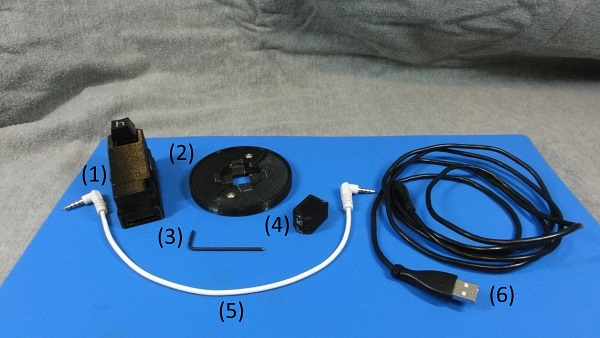
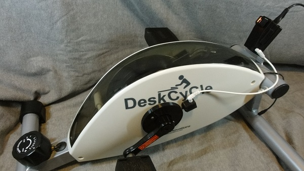

« Previous -
Version 3/6
(diff) -
Next » -
Current version
J. Simmons, 08/26/2018 11:04 pm
First Time Setup¶
Materials¶
Your Holoseat includes the following components shown in the picture below.

- Controller
- Tone ring
- Hex key
- Sensor
- Sensor cable
- USB cable
Results¶
The following instructions cover all of the steps required to set up your new Holoseat on supported exercise equipment. When you are done, it should look like the following picture.

Procedure¶
1. Assemble the exercise equipment¶
Follow the manufacturer’s instructions to assemble the exercise equipment (supported exercise equipment includes DeskCycle and DeskCycle 2). Note, you should stop after you have completed the steps covering installing the equipment's feet and pedals. Holoseat will replace the included "bike computer".
2. Attach Tone Ring¶
Requires: exercise equipment, tone ring, and hex key
- Use included hex key to remove the two screws from the tone ring
- Pull the two tone ring halves apart
- Place the exercise equipment with the right hand side facing you
- Place the two tone ring halves around the axle, taking care to line the screw holes away from the crank arm (otherwise the crank arm will block access to the screws in later steps)
- Press the two tone ring halves together until they fit snugly over the axle and the screw holes line up (you will need to maintain pressure on the Tone Ring halves until both screws have been replaced)
- Use the included hex key to replace one of the screws you removed in step 2.1, taking care to maintain pressure on the tone ring halves and to keep the screw straight as it goes in. Do not over tighten or you may strip the threads
- Repeat step 2.6 with the other screw
3. Attach Sensor¶
Requires: exercise equipment, spacer, sensor, alcohol wipe
- Locate the area where the Sensor will be attached
- Clean the area on where the Sensor will be attached with the alcohol wipe and let dry
- Remove the adhesive backing from the sensor
- Hold the spacer against the tone ring
- Place the sensor on the exercise equipment with the narrow end pointing at the center of the tone ring and touching the spacer. Hold in place for 60 seconds
- Wait for 5 minutes
4. Attach Controller¶
Requires: exercise equipment, controller
- Align the open slot in the Controller housing with the mounting tab on the exercise equipment
- Slide the Controller onto the mounting tab (pressing firmly) until it clicks into position
5. Connect Sensor to Controller¶
Requires: exercise equipment, sensor cable
- Take one end of the sensor cable and plug it into the jack in the sensor, making sure to support the sensor with your fingers when you press the cable into place (it should click into place)
- Take the other end of the sensor cable and plug it into the jack in the controller
- Ensure the cable is not in the path of the crank arm or pedal
6. Install Drivers¶
Note, the drivers are pre-installed with Windows 10. The following steps are only required for Windows 7 and Windows 8.
TBD
7. Place exercise equipment¶
Requires: exercise equipment with Holoseat
- Select location for game play
- Place exercise equipment in front of seat where you will be playing your games, making sure the pedals are at a comfortable distance and can be operated smoothly from your seat
- Be sure to set resistance for the exercise equipment, if in doubt start with a lower setting and work up to higher settings
8. Connect Controller to PC¶
Requires: exercise equipment with Holoseat, USB cable, PC
- Connect the micro end of the USB cable to the controller
- Run the USB cable to the PC, ensure the USB cable is not in the path of the crank arm or pedal
- Connect the USB cable to an available USB port (must be on the PC or a powered USB hub)
Setup Complete¶
Exerfy your games! This concludes the setup of your Holoseat, you are ready to play.
{kind=link}
{kind=link}
{kind=link}
{kind=link}
{kind=link}
{kind=link}
{kind=link}
{kind=link}
{kind=link}
{kind=link}
{kind=link}